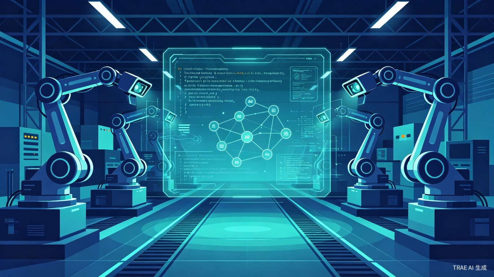
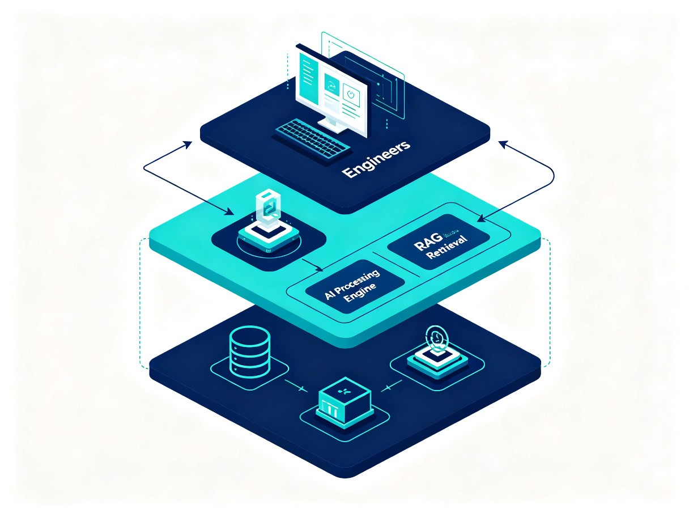

AI驱动非标自动化设备控制程序开发平台
基于通用上位机平台构建本地知识库，通过RAG检索增强与模板系统，实现AI辅助的设备控制程序快速开发
需求背景
行业现状
中国非标自动化设备行业2025年市场规模预计达到4,876亿元，年复合增长率约12%-15%[1]。其中机器人与视觉系统集成的产线设备占据高增长赛道，新能源汽车动力电池、光伏、半导体封装测试等领域贡献了超过65%的新增订单[2]。工业软件市场同步扩张，2024年规模突破3,200亿元，预计2030年达到8,500亿元[3]。
核心痛点
非标自动化设备软件开发本质上是在"卖工程师时间"。每个项目从零开始，工程复用率不足15%[4]，做100个项目等于从零开始100次。项目延期交付率高达31%，间接损失平均侵蚀毛利4.7个百分点[5]。没有软件平台的公司以更多时间开发项目，有平台或模板的也要堆人力进行开发。终端工厂严重依赖供应商的开发水平，不方便自己验证和开发。
关键矛盾：制造业一线的软件开发直接决定交期和质量，交期几乎是决定客户订单的极重一环。开发工程师不是在开发就是在开发的路上，加班是常态。行业需要一种方式，让AI承担重复性工作，让工程师聚焦在真正需要创造力的部分。
AI窗口期
2024-2025年间，中国工业企业应用大模型及智能体的比例从9.6%跃升至47.5%[6]。西门子Industrial Copilot、施耐德EcoStruxure AI、倍福TwinCAT CoAgent等国际巨头已推出AI辅助工业编程产品[7]。RAG（检索增强生成）技术在企业知识库领域的采用率已达75%，Graph RAG和Agentic RAG成为2025-2026年的技术前沿[8]。技术窗口已经打开，但针对非标自动化设备控制程序开发场景的AI解决方案仍是空白。
目标用户与场景
用户画像
用户A：非标集成商的软件开发工程师
日常在多个项目间切换，每个项目都要重新搭建通讯层、视觉检测流程、运动控制逻辑。手头积累了一些代码片段和项目模板，但散落在各处，找不到也用不上。最痛苦的是接到一个新项目，明明以前做过类似的，却要从头写起。
用户B：终端工厂的设备维护/工艺工程师
供应商交付的设备控制程序是黑箱，出问题时只能打电话等供应商来人。想自己做一些简单的参数调整和功能扩展，但没有编程能力。希望有一个工具能帮自己理解程序逻辑，甚至生成简单的修改代码。
用户C：集成商技术负责人/项目经理
团队规模卡在30-40人无法扩张，因为项目越多内耗越严重。不同工程师写的代码风格差异大，维护成本高。希望有一个统一的平台和知识体系，让新人快速上手，让老项目的经验能沉淀下来复用。
核心使用场景
| 场景 | 触发条件 | 用户目标 | 优先级 |
|---|---|---|---|
| 新项目快速启动 | 接到新设备开发需求 | 检索历史类似项目模板，快速生成基础框架代码 | P0 |
| 通讯协议配置 | 需要对接新的PLC/机器人/相机型号 | 从知识库检索对应型号的通讯配置代码和注意事项 | P0 |
| 视觉检测流程搭建 | 需要实现新的检测算法 | 检索类似检测场景的代码模板和参数配置 | P0 |
| 代码理解与调试 | 接手他人项目或排查问题 | AI解释代码逻辑，定位问题根源 | P1 |
| 知识沉淀与共享 | 项目完成后 | 将项目经验、踩坑记录、代码模板沉淀到知识库 | P1 |
| 终端工厂自主验证 | 供应商交付设备后 | 理解控制程序逻辑，进行简单参数调整 | P2 |
竞品与行业对标
国际工业巨头AI产品
| 厂商 | 产品 | 核心能力 | 局限 |
|---|---|---|---|
| 西门子 | Industrial Copilot | 自然语言生成ST/SCL代码、WinCC HMI界面生成，与Azure OpenAI集成 | 绑定TIA Portal生态，不支持非西门子平台 |
| 倍福 | TwinCAT CoAgent | 代码建议、智能优化、自动文档、I/O聊天配置 | 绑定TwinCAT生态 |
| 施耐德 | EcoStruxure AI Copilot | 自然语言生成功能块、代码测试验证 | 绑定EcoStruxure平台 |
| 罗克韦尔 | FactoryTalk AI Copilot | 代码生成/解释、版本控制交互，支持边缘部署 | 绑定FactoryTalk生态 |
| ABB | Genix Copilot + RobotStudio AI | 从自然语言需求生成IEC 61131-3功能块图，机器人编程辅助 | 绑定ABB机器人与PLC生态 |
差异化定位
国际巨头的AI产品全部绑定自有硬件生态，无法服务于使用混合品牌设备的非标自动化场景。而非标自动化的现实是：一条产线可能同时使用西门子PLC、安川机器人、海康相机、自研上位机。本产品的核心差异化在于：
- 平台无关性：不绑定特定PLC/机器人/相机品牌，通过知识库覆盖多厂商设备
- 知识驱动：以RAG检索历史项目经验为核心，而非单纯的代码生成
- 模板复用：将非标项目的共性抽象为模板，大幅提升工程复用率
- 本地部署：满足工厂对数据安全和网络隔离的要求
学术与开源参考
学术界已有多个相关研究方向：AutoPLC框架利用RAG按需检索候选案例进行上下文学习[9]；Vendor-Aware Industrial Agents整合功能块定义、厂商指令、历史代码三个检索段[10]；ABB的Spec2Control实现从自然语言需求到功能块图的端到端生成，策略检测率100%[11]。这些研究验证了技术可行性，但尚未形成可落地的产品。
产品定位与目标
一句话定位
面向非标自动化设备开发场景的AI辅助开发平台，通过本地知识库+RAG检索+模板系统，让工程师从重复劳动中解放出来，将项目启动时间从数周压缩到数天。
核心目标
效率提升
新项目基础框架搭建时间从2-4周缩短至2-3天，工程复用率从15%提升至60%以上
质量一致性
通过模板标准化和AI代码审查，减少因工程师水平差异导致的质量波动
知识沉淀
将分散在工程师脑中和硬盘里的经验系统化沉淀，形成可检索、可复用的组织资产
降低门槛
让终端工厂的工艺工程师也能理解设备控制程序逻辑，进行简单的参数调整
不做的事
- 不替代工程师的判断——AI生成代码必须经过人工审核才能部署
- 不涉足安全关键功能（SIL 2级及以上）的代码自动生成[12]
- 不做通用IDE或代码编辑器——与现有开发工具链（Visual Studio、VS Code）协作
- 不做PLC底层编程——聚焦上位机层面的设备控制程序开发
功能需求
功能总览
| 模块 | 功能描述 | 优先级 | 阶段 |
|---|---|---|---|
| 知识库管理 | 支持上传项目文档、代码片段、配置文件、踩坑记录等多种格式，自动解析并建立索引。支持按设备类型、项目类型、技术栈等维度分类管理 | P0 | MVP |
| RAG智能检索 | 工程师用自然语言描述需求，系统从知识库中检索最相关的模板、代码片段、配置方案。支持语义检索+关键词混合检索，返回结果附带相关度评分和来源标注 | P0 | MVP |
| 模板系统 | 预置常用设备控制程序模板（通讯配置、视觉检测流程、运动控制逻辑、报警处理等），支持基于模板快速生成项目框架代码。模板支持参数化配置，适配不同设备型号 | P0 | MVP |
| AI代码生成 | 基于检索到的模板和上下文，AI辅助生成完整的控制程序代码。支持自然语言描述需求→代码生成、代码补全、代码解释三种模式 | P1 | V2 |
| 代码审查助手 | AI自动审查生成代码的安全合规性（参照IEC 61508/GB/T 20438标准），标注潜在风险点，生成审查报告 | P1 | V2 |
| 项目经验沉淀 | 项目完成后自动提取可复用的代码片段和配置方案，推送到知识库。支持工程师手动添加踩坑记录和最佳实践 | P1 | V2 |
| 设备通讯配置向导 | 针对常见PLC/机器人/相机型号，提供可视化的通讯配置向导，自动生成对应的通讯层代码 | P1 | V2 |
| 多用户协作 | 支持团队成员共享知识库、评论模板、协作编辑。知识库变更有版本记录和通知 | P2 | V3 |
MVP核心模块详解
模块1：知识库管理
业务逻辑：工程师上传项目文档（PDF/Word/Markdown）、代码文件（.cs/.py）、配置文件（XML/JSON）、通讯协议说明等素材。系统自动解析文件内容，按语义切分为知识片段，建立向量索引和全文索引。每个知识片段附带元数据标签（设备类型、项目类型、技术栈、适用场景）。
交互逻辑：点击"上传知识"→选择文件或拖拽上传→系统自动解析并预览提取的知识片段→工程师确认/修正标签→入库。支持批量上传和目录扫描。
规则约束：单文件大小不超过50MB；支持PDF、Word、Markdown、TXT、C#源码、Python源码、XML、JSON格式；知识片段最小200字符，最大5000字符；每个知识片段至少需要一个分类标签。
模块2：RAG智能检索
业务逻辑：工程师在搜索框输入自然语言描述（如"四轴机器人与基恩士相机通讯配置"），系统将查询进行语义改写和扩展，同时在向量索引和全文索引中检索，通过Cross-Encoder重排序后返回Top-5最相关的知识片段。每个结果附带相关度评分、来源文件、适用场景标签。
交互逻辑：输入搜索内容→实时显示搜索建议→回车提交→展示检索结果列表（卡片形式，包含摘要、标签、相关度）→点击结果查看详情→可一键"基于此模板创建项目"或"复制代码片段"。
规则约束：检索响应时间不超过3秒（本地部署环境）；返回结果最多10条，默认5条；相关度低于0.3的结果不展示；支持按设备类型、项目类型筛选。
模块3：模板系统
业务逻辑：模板是经过验证的、可参数化的项目骨架代码。预置模板覆盖：通讯层（PLC/机器人/相机）、视觉检测流程（定位/测量/缺陷检测）、运动控制（点对点/轨迹/多轴同步）、报警与安全逻辑、数据记录与报表。工程师选择模板后，填写设备型号、通讯参数、工艺参数等配置项，系统生成完整的项目框架代码。
交互逻辑：进入"模板中心"→浏览分类模板列表→选择模板→填写参数配置表单→预览生成的代码结构→确认生成→下载项目文件或直接在IDE中打开。
规则约束：模板参数有默认值和取值范围校验；生成的代码包含完整的注释和TODO标记；模板版本管理，新版本不影响已有项目。
系统架构

架构分层
| 层级 | 组件 | 职责 |
|---|---|---|
| 用户交互层 | Web应用 / IDE插件 | 知识库管理界面、检索交互、模板配置向导、代码预览与导出 |
| AI服务层 | RAG引擎 / LLM推理 / 模板引擎 | 文档解析与索引、语义检索与重排序、代码生成与审查、模板参数化渲染 |
| 数据存储层 | 向量数据库 / 文件存储 / 关系数据库 | 知识片段向量索引、原始文件存储、模板与项目元数据、用户与权限管理 |
关键技术选型
| 技术领域 | 推荐方案 | 选型理由 |
|---|---|---|
| RAG框架 | LlamaIndex | 专注数据检索，检索准确率约92%，代码量比LangChain少30-40%，适合知识密集型场景 |
| 向量数据库 | Chroma（轻量）或 Milvus（大规模） | Chroma适合单团队本地部署，Milvus适合多团队共享知识库 |
| LLM | 本地部署开源模型（Qwen3 / DeepSeek） | 满足工厂数据安全要求，DeepSeek在工业控制代码生成场景已有成功实践 |
| 文档解析 | Unstructured + 自定义解析器 | 支持PDF/Word/Markdown等多格式，可扩展工业专用格式 |
| 前端框架 | React / Vue + TypeScript | 主流技术栈，组件生态丰富，适合构建复杂交互界面 |
| 后端框架 | Python FastAPI / .NET Core | FastAPI与AI生态兼容性好；.NET Core与上位机技术栈一致 |
部署方案
产品支持本地私有化部署，满足制造业对数据安全和网络隔离的要求。推荐硬件配置：
- 推理服务器：NVIDIA GPU（RTX 4090或A100），32GB+显存，用于LLM推理
- 应用服务器：8核CPU，32GB内存，500GB SSD，用于RAG服务和Web应用
- 最低配置：单机部署，RTX 4090 + 32GB内存 + 1TB SSD
AI工作流设计
工程师的典型工作流分为五个阶段：
- 需求输入：工程师用自然语言描述新项目的设备配置和功能需求
- 知识检索：RAG引擎从知识库中检索最相关的历史项目、代码模板、配置方案
- 模板匹配：系统根据检索结果推荐最匹配的项目模板，工程师选择并配置参数
- 代码生成：基于模板和参数配置，生成项目框架代码；AI辅助填充业务逻辑代码
- 人工审核：工程师审核生成的代码，AI标注潜在风险点，确认后部署
安全红线：所有AI生成的代码必须经过人工审核才能部署到生产环境。安全关键功能（急停逻辑、安全互锁、限位保护等）的代码不允许AI自动生成，必须由工程师手动编写并经过双重审查[13]。
安全与合规
工业控制代码的安全合规是不可逾越的底线。本产品在安全层面遵循以下原则：
| 合规维度 | 相关标准 | 产品应对 |
|---|---|---|
| 功能安全 | IEC 61508 / GB/T 20438 | SIL 2级及以上功能禁止AI自动生成；AI生成代码标注安全等级，人工最终确认 |
| 网络安全 | IEC 62443 | 本地私有化部署，数据不出厂；知识库访问权限控制；操作日志不可篡改 |
| 代码追溯 | SITS2026（ISO/IEC JTC 1/SC 7） | 每行AI生成代码附带来源锚点（对应知识片段或模板），支持双向可追溯性[14] |
| 可解释性 | 行业最佳实践 | AI生成代码附带推理依据说明；检索结果展示来源文件和匹配依据 |
迭代规划
MVP：知识库+模板检索（3个月）
核心能力：文档上传与解析、RAG语义检索、预置模板库、模板参数化生成项目框架代码
验证目标：工程师能在3天内完成新项目基础框架搭建（当前需2-4周）
V2：AI代码生成+审查（3个月）
新增能力：基于检索结果的AI代码生成、代码解释与调试辅助、安全合规自动审查、项目经验自动沉淀
验证目标：AI生成代码经人工审核后可直接使用的比例达到70%以上
V3：协作与生态（3个月）
新增能力：多用户协作与权限管理、IDE插件（Visual Studio/VS Code）、设备通讯配置向导、行业模板市场
验证目标：团队知识库共享率达到80%，新人上手时间从3个月缩短至1个月
成功指标
| 指标 | 当前基线 | MVP目标 | V2目标 | 度量方式 |
|---|---|---|---|---|
| 新项目启动时间 | 2-4周 | 3天 | 1天 | 从需求确认到框架代码可编译的时间 |
| 工程复用率 | <15% | 40% | 60% | 项目中复用代码占总代码的比例 |
| 知识库检索命中率 | — | 60% | 80% | 检索结果中Top-1相关的比例 |
| AI代码可用率 | — | — | 70% | AI生成代码经审核后可直接使用的比例 |
| 新人上手时间 | 3个月 | 2个月 | 1个月 | 新人独立完成标准项目的时间 |
风险与应对
| 风险 | 概率 | 影响 | 应对策略 |
|---|---|---|---|
| AI生成代码存在安全隐患 | 高 | 极高 | 强制人工审核；安全关键功能禁止AI生成；代码审查助手标注风险点；逐步建立AI代码安全测试用例库 |
| 知识库内容质量不足 | 高 | 高 | MVP阶段人工审核入库内容；建立知识质量评分机制；设置知识贡献激励机制 |
| 本地部署硬件成本高 | 中 | 中 | 提供多档配置方案（从单机到集群）；支持CPU推理模式作为降级方案；探索模型量化降低显存需求 |
| 工程师 adoption 抵触 | 中 | 高 | 从最痛的场景切入（项目启动）；保留工程师的决策权；渐进式引入，不改变现有开发习惯 |
| 不同厂商设备差异大 | 高 | 中 | 知识库按厂商/型号分类索引；模板系统支持参数化适配；社区贡献设备适配方案 |